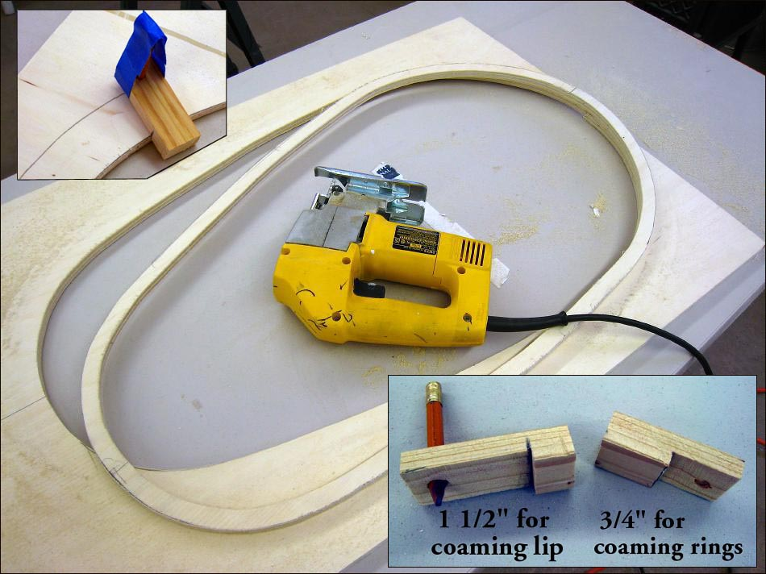

| Coaming | Menu Last Page Next Page |
|

To accurately draw the 3/4" rings and 1 1/2" coaming lip outside dimensions (OD), wood templates are constructed that will allow drawing the outline with a pencil. The "cut" of the template is placed against the inside cut of the cross section, and the template is moved around the loop marking the 3/4" or 1 1/2" Outside dimension (OD). Tape is used to hold the pencil in place.
|
|